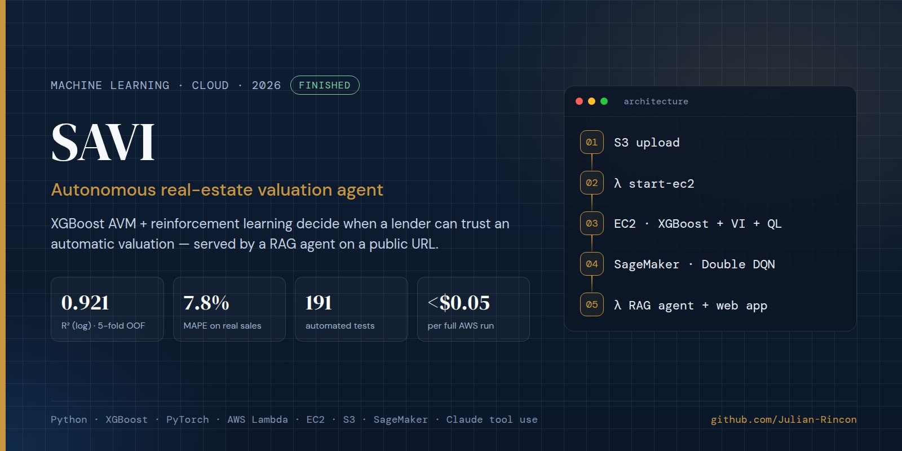
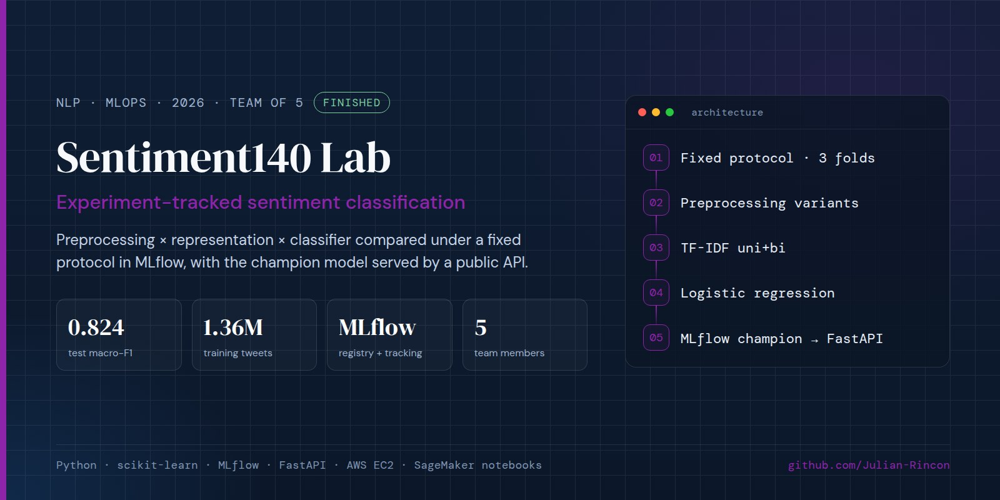
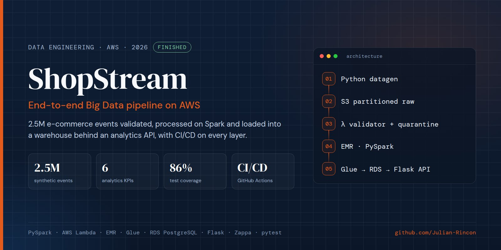
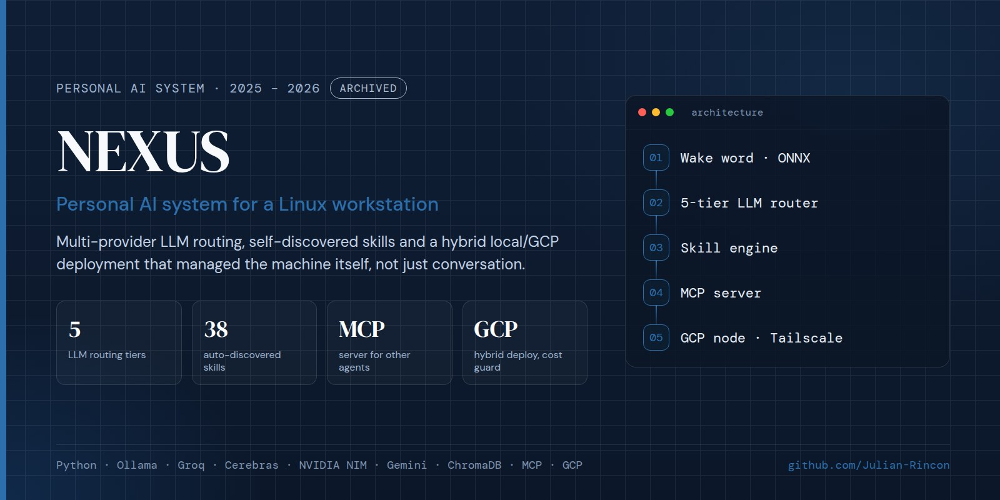
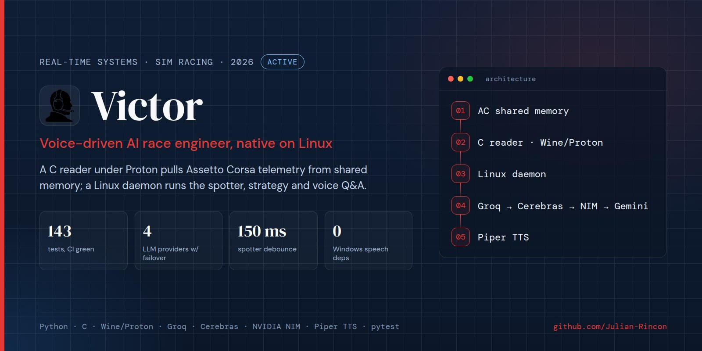
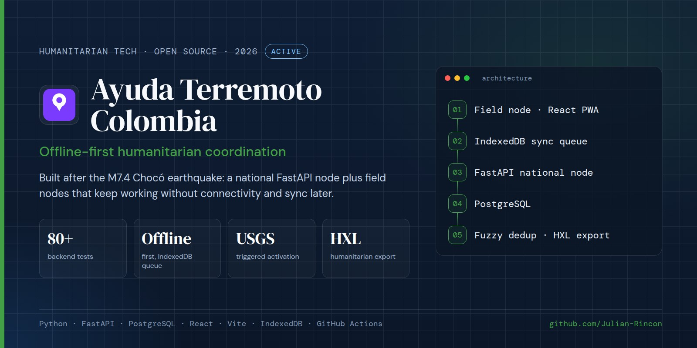
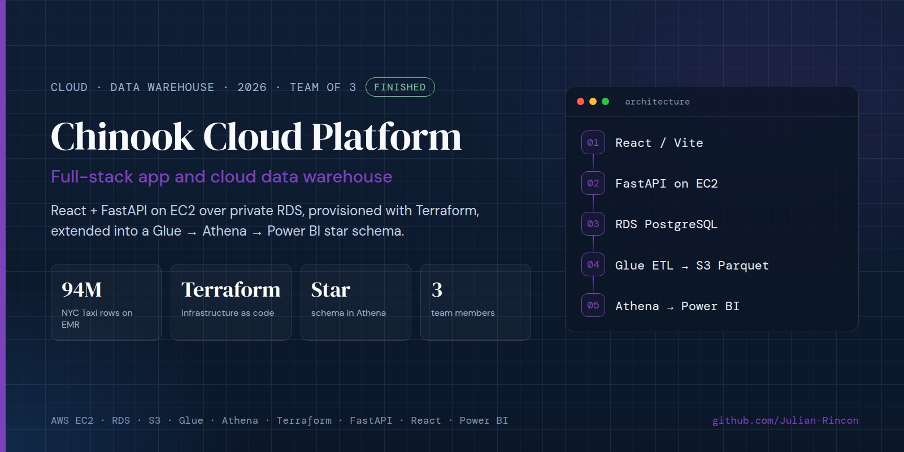
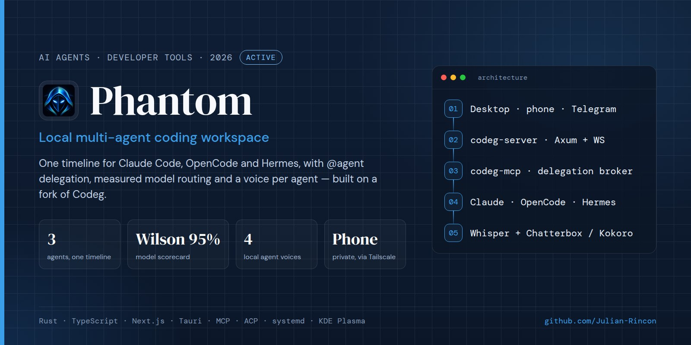
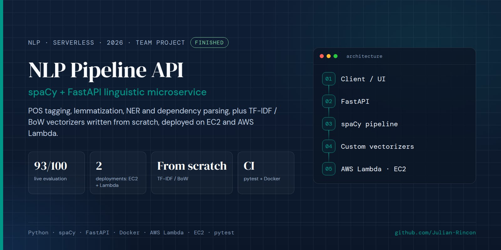

CS & AI student at Universidad Sergio Arboleda, Bogotá. I clean and rebuild data, train models I test once on data they have never seen, and build the pipelines and tools around them.
Figures from each repository, checked November 2026. How I measure
About me
I'm a 9th-semester (final term) Computer Science & Artificial Intelligence student at Universidad Sergio Arboleda, I work on data science and machine learning: getting the data right, choosing a fair baseline, and reporting results I can defend. My projects run on real infrastructure, from AWS EMR, Lambda and RDS to the Linux machine I use every day.
On the ML side, I took SAVI, a team reinforcement-learning project from our Machine Learning course, and rebuilt it on my own as a cloud-native agent: I audited the original, found its headline R²=0.96 came from padded data, rebuilt the dataset from real public sources, and shipped an event-driven AWS pipeline (S3, Lambda, EC2, SageMaker) with a RAG agent on a public URL, reporting results honestly, including where RL doesn't beat the baseline. On the data side, ShopStream pushes 2.5M events through Lambda validation, EMR/PySpark, Glue ETL and a warehouse on RDS. And I build the agent tooling I use every day: Phantom, a local workspace where Claude Code, OpenCode and Hermes share one timeline and delegate to each other, built in Rust and TypeScript on a fork of the open-source Codeg, and NEXUS, my personal assistant layered on top of it.
Beyond software, I care about showing up on bigger stages than the ones I started on. At 17 I represented my school from Ecuador at an international competition in Barcelona, and years later that same instinct, to compete and build somewhere bigger than my own classroom, is what's pointing me toward an internship now and an MSc in Germany after. More on that (and on USABOT) in Leadership & Impact below.
Languages
ML / AI
Cloud & DevOps
Tools
Featured Projects
Three projects I'd defend line by line in an interview. A few more below, if you want to keep scrolling.

Reinforcement learning decides when a lender can trust an automatic valuation: APPROVE, human REVIEW, or REJECT. v1–v2 were a team project for our Machine Learning course (with Valeria Larea, Nicolás Garzón and Juan Niño). For v3 I worked alone: audited v2, rebuilt the dataset from real public sources, and re-engineered it as an event-driven AWS pipeline (S3 → Lambda → EC2 → SageMaker) with a RAG agent and web app on a public URL. Results are reported honestly, including where RL does not beat the baseline.

Team of five for our NLP course. Preprocessing, representation and classifier compared stage by stage under a fixed, seeded protocol tracked in MLflow; the champion (TF-IDF unigrams+bigrams with logistic regression) was retrained on 1.36M tweets, evaluated once on test, registered in the Model Registry and served by a public FastAPI on EC2. I ran the tracking server, the API and the audit notebook.

End-to-end AWS big data pipeline for a fictional e-commerce platform. Generates 2.5M synthetic behavioral events, validates ingestion via S3-triggered Lambda with CloudWatch metrics and quarantine, processes with PySpark on EMR, loads a star schema into RDS PostgreSQL via Glue ETL, and exposes analytics through a Flask API deployed with Zappa.

My personal assistant, rebuilt in October 2026 as a small layer on top of Phantom: a guaranteed daily briefing (calendar, inbox headers, tasks, services) to Telegram and the desktop, an agenda that turns emails into Google Calendar events, a natural-language gym log over Telegram with deterministic load progression, push-to-talk voice with its own local voice, one memory shared by Claude Code, OpenCode and Hermes over MCP, and a copilot that fixes failing tests in an isolated git worktree and merges only after Claude reviews the diff. v1 (2025 – 2026) was a 47,000-line monolith that was never reliable enough to depend on; v2 keeps the goals in ~12,000 lines with 1,400+ tests and no root access. Source private; the public repo documents it with real screenshots.

Voice-driven race engineer for Assetto Corsa, native on Linux. A C reader running under the same Proton prefix as the game pulls telemetry straight from AC's shared memory; a Linux daemon runs the deterministic spotter and alerts, calculates pit strategy, and answers free-form voice questions through a four-provider LLM chain behind a circuit breaker, with Piper for speech synthesis.

Independent, open-source humanitarian coordination system built in response to the real magnitude-7.4 earthquake that struck Chocó, Colombia on August 10, 2026 — not an officially adopted tool of the government or the NGOs running the response. A FastAPI/PostgreSQL national node coordinates with offline-first React/IndexedDB field nodes that sync once connectivity returns, with fuzzy-match deduplication, USGS-triggered activation and HXL export.

End-to-end AWS project, built as a 3-person team with Juan Hurtado and David Martinez for our Big Data course: React + FastAPI app on EC2 with private RDS PostgreSQL, provisioned via Terraform. Extended into a cloud data warehouse with AWS Glue ETL, S3 (Parquet), Athena, and Power BI, with a full star schema and CI/CD via GitHub Actions.
View on GitHub →
One local interface for Claude Code, OpenCode and Hermes Agent, built on my fork of the open-source Codeg workspace (Apache-2.0): a single timeline, delegation between agents via @mentions, a model scorecard and router that choose agent, model and effort per task, a fully local voice layer, and a Telegram bridge with permission buttons. I keep the fork merged with upstream releases.

Team project for a Natural Language Processing course: a spaCy/FastAPI microservice for POS tagging, lemmatization, NER, and dependency parsing, plus TF-IDF/BoW/one-hot vectorizers implemented from scratch to meet a non-standard spec. Deployed on EC2 and AWS Lambda with CI running pytest and a Docker build.
Full-stack ordering platform built for a family coffee distribution business: a React/Vite/Tailwind admin panel, an Express/Prisma backend with admin-key auth and rate limiting, and a Telegram sales bot that takes natural-language orders over a live 19-product catalog. CI on GitHub Actions runs lint, build, npm audit, and tests. Closed-source since it runs a real business's orders; the admin panel is live.
View live app →How I measure
SAVI's XGBoost model (R²(log) 0.921, MAPE 7.8%) is reported next to LightGBM (0.912, 8.3%) on the same folds. Sentiment140 started from a dummy baseline before any real model.
Models are chosen on validation and evaluated once on held-out data, with 95% bootstrap intervals. When SAVI's RL policies did not beat Value Iteration on 378 test sales, that is what the README says.
SAVI's chat agent is scored on 10 fixed questions: right tool, every dollar figure traceable to a tool output, and an answer given. It went from 9/10 to 10/10; a free LLM mode scored 8/10 and stays off.
Tests and CI on every project that ships: 1,483 tests in NEXUS, 219 in Victor, 197 in SAVI, 86% coverage in ShopStream.
Leadership & Impact
Not every hard problem is technical. These are the two times I had to design, pitch, and represent, not just build.
3D CAD · Sensor architecture · Commercial pitch
I designed the sensor architecture, then had to convince judges who cared about the business case, not the wiring.
Led hardware design and commercial strategy for an intelligent automatic irrigation system, winning 1st place overall against competing university teams. I designed the 3D CAD model for the physical prototype, integrated ultrasonic sensor architecture for real-time water level detection and automated valve control, and wrote and delivered the go-to-market pitch that sold the idea to judges.
Technical PM · Lead Frontend/UX · Age 17
I interviewed women leaders in tech to build the content, then represented my school from Ecuador against teams from two continents.
Served as Technical Product Manager and Lead Frontend/UX Developer for WarmiTics, a web platform highlighting women leaders in STEM. I architected and built the full application, owned all frontend and UX decisions, managed cross-functional logistics, and conducted structured interviews with women leaders in technology to gather primary content. Won 1st place at Wisibilízalas (Pompeu Fabra University, Barcelona) in the Senior category at age 17, representing my school from Ecuador against teams from across Latin America and Europe.
View project →Education & Highlights
Universidad Sergio Arboleda — Bogotá, Colombia
9th semester of 9. Previous coursework includes Big Data & Data Engineering, Machine Learning, Simulation & Modeling, Neural Networks (Classification), High Performance Computing, Databases, Compilers, Distributed Networks, and Operating Systems.
GPA: 4.04/5.0 (Colombian scale) · Upward trend: last 3 semesters avg. 4.5+/5.0.
NEXUS · Self-directed, closed-source · v2 since Oct 2026
Built v1 (2025 – 2026) as a large standalone system: multi-provider LLM routing, dozens of self-discovered skills, a hybrid GCP/local deployment and an MCP server. It was never reliable enough to depend on, so in October 2026 I rebuilt it as v2, a ~12,000-line layer on Phantom with 1,400+ tests: daily briefing, email-to-calendar agenda, gym log, push-to-talk voice, memory shared across agents, a test-fixing copilot with review gates, and a cloud watchdog, all without root access. v2 applies what v1 taught me.
Zafra Asesores Tributarios · Girardot, Colombia
Built a complete sales CRM for a tax advisory firm: FastAPI/SQLAlchemy backend modeling clients, prospects, campaigns, and interactions, with a React/Vite frontend for pipeline management. Added an AI layer on Groq (Llama 3.3 70B) for interaction summaries, email drafting, and lead scoring, plus a qualification bot on the WhatsApp Cloud API. Delivered and demoed to the client with technical documentation and a defined scope for the remaining work (authentication, continuous deployment).
Compilers & Language Design · Universidad Sergio Arboleda
Designed and implemented a domain-specific language for ML workflows using ANTLR4: a grammar, generated parser, and a Visitor-pattern interpreter that trains and evaluates a K-Means model through purpose-built syntax instead of raw Python.
Amazon Web Services Academy · 40 hours · May 2026
Completed the AWS Academy Data Engineering program covering data ingestion, transformation, storage, and analytics on AWS, including S3, Glue, Athena, EMR, and Redshift. Verified badge on Credly: credly.com/go/UGp1CUEB
Oracle Academy · Database Track
Completed two database courses through Oracle Academy: Database Design (August 2024, relational modeling, normalization, ER diagrams) and Database Programming with SQL (December 2024, advanced queries, joins, subqueries, and DML/DDL). Complementary to hands-on work with PostgreSQL (AWS RDS), MySQL, and Athena in production projects.
International Test of English Proficiency · November 2025
Certified B2 overall, with Listening at C1 and Reading and Speaking at B2.
Pompeu Fabra University · Barcelona, Spain · Shakespeare School, Ecuador · Senior Category
Won first place in an international competition fighting gender stereotypes in technology, organized by Pompeu Fabra University. Represented Shakespeare School (Quito, Ecuador) in the Senior category at age 17, competing against teams from Latin America and Europe. The project consisted of a website highlighting the careers of women in technology and ICT.
View winning project: WarmiTics →Get in touch
Looking for internships, freelance projects, or collaborations in AI, Data Science, and Software Development. Let's build something real.